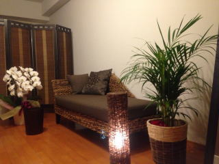
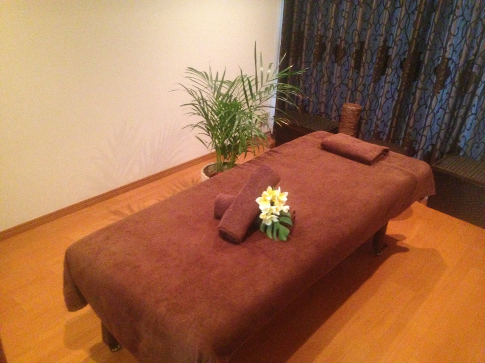
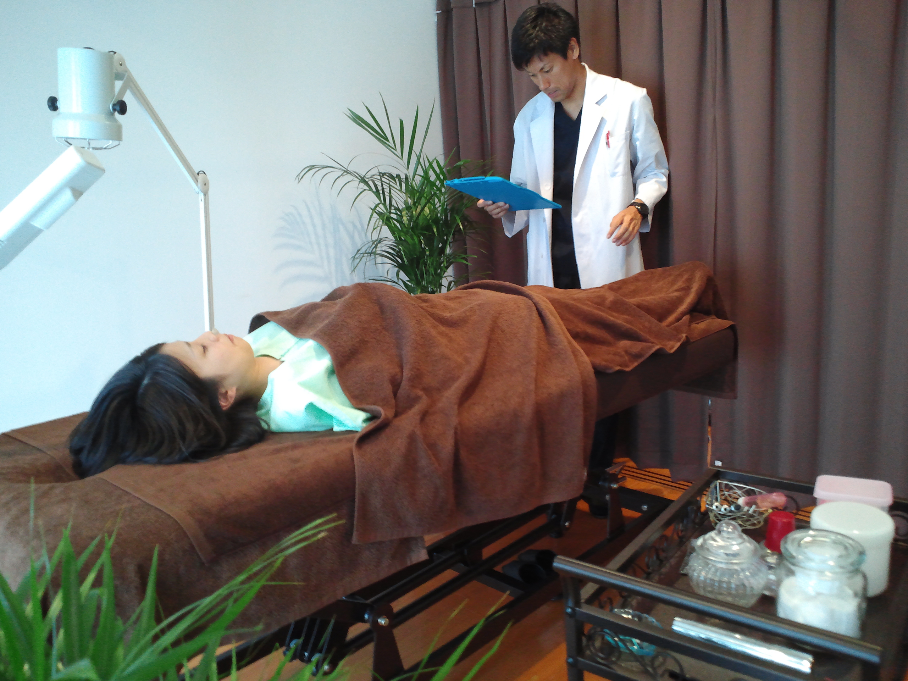
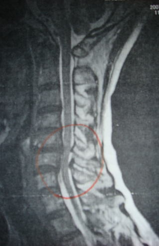
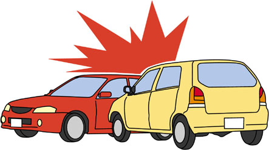

交通事故に遭ってしまってむちうちになってしまった。痛みが取れないという方はTeaching Beauty鍼灸マッサージ整骨院へ。
電話でのご予約・お問い合わせはTEL.03-6413-7803
〒154-0014 東京都世田谷区新町3-21-1さくらウェルガーデン301号室
交通事故施術（むちうち施術）Accident
交通事故施術（むちうち施術）
当院の高い技術が無料（自賠責保険負担）で受けられます。
お知り合いの方が事故に遭われた際にはご相談下さい。
※但し、他の接骨院からの転院を除く。事故後1ヶ月以内の方。紹介の場合でも当院でお引き受けできない疾患もありますので、必ずお電話にてご相談下さい。
尚、紹介者様の施術期間がすべて終了したのちに紹介者様に60分マッサージの施術を提供いたします。
TEL:03-6413-7803


【交通事故施術で当院が選ばれる理由】
１、交通事故対応1,000件以上の実績
２、院長がNHK”ひるとく”にレギュラーとして3年間出演していました。
３、院長が大学や専門学校で講義をしている。教育歴20年
４、業務連携の弁護士さんをご紹介
５、完全予約制
６、個室完備
７、保険会社との交渉代行、慰謝料や必要書類についての
無料アドバイス
交通事故で悩んでいませんか？
交通事故施術の場合、自賠責保険が整骨院で取り扱えます。 一般的な交通事故の場合、自賠責保険により施術費がまかなわれますので、自己負担金はございません。
交通事故の示談後にご来院された場合でも、当院では各種保険にて施術を行っておりますので、お気軽にご相談ください。
早期に施術を開始すること
交通事故の後遺症で一番大事なことは、「早期に施術を開始する」ことです。軽いケガだと思って放っておくと、後々痛みや痺れなどの症状が出てくることも少なくありません。
軽いケガや痛みがなくても、その後、何年か後に痛みが出ることもありますので、油断せず病院でCT・MRI などによって精密検査を受けましょう。 当院では、交通事故が原因の諸症状でお悩みの方、また、他の整骨院や整形外科にて交通事故の施術を受けている方も経過が思わしくなくてお困りの方のご相談に応じております。
今通っている整骨院を変える事もできますし、整形外科を変えることもできます。
整骨院に2カ所行くことはできませんが、整骨院1カ所と整形外科1カ所を併用することは可能です。（但し、同じ日に整骨院と整形外科の
両方にかかることはできません）
交通事故による主な症状
むちうちは、交通事故などの衝撃で頭部が激しく動き、頚部などに障害が発生することをいいます。首や腰の筋肉・靭帯の炎症にとどまるものから、交感神経や神経根に障害が及ぶもの、脊椎本体に障害が及ぶものまで、様々な症状があります。
主な自覚症状としては、頭痛・めまい・吐き気・耳鳴り・首や腰の痛み・凝り・張り・手足の痺れ・ふるえ・脱力感・胃腸等消化器系統の機能低下・食欲不振
などがあります。
交通事故に遭ってしまったらどうすればいいの？
- 安全な場所に車を止める。
-
相手がいる場合は怪我がないか確かめる→怪我がある場合はすぐに119番！！
病院に行った際には、痛みがある部位はすべて伝え、 痛みのある部位を診断書として貰っておいて下さい。
事故によるケガは診断書に基づいて施術箇所が決まります。 後で痛くなっても事故によるケガとして施術が出来なくなります。
そのため、痛みがある部分は必ずドクターに診てもらうことが重要です。 -
110番する。→必ず警察を呼び当事者同士での現場での口約束や示談はしない。
→痛みがある場合などは、その旨を警察に伝え人身事故扱いとする。
必ず身体の施術ができるように人身事故の手続きを取ってもらうようにして下さい。
物損事故だと患者様に支払われる慰謝料請求ができない場合があります。 - 交通事故状況を記録する。 交通事故現場や周辺の状況、自分と相手の車両の破損状況（キズや部品）などを、カメラや携帯電話で撮っておくことも大切です。
-
保険会社に下記のことを連絡する
- 交通事故の日時、場所
- 相手の住所、氏名、電話番号、車名、ナンバーなど
- 交通事故の状況
- 届出警察署
当院にて交通事故施術を受けたい方へ
１、 お電話にてご予約をしてからご来院 
施術をご希望の方、又はご相談の方は当院にご連絡下さい。
（保険会社には患者様が受診後、当院から担当者に直接ご連絡いたしますので、事前に担当者に連絡しないで当院にお越し下さい。担当者に連絡をしてからの来院となると、整骨院ではかかれないだとか、医師が整骨院にかかっていいと言わないとダメだとか言われることがあるためです。自賠責保険の代理で行っている損保会社にそこまでの権限はありません。）
お電話時に確認させていただくこと
・ お取り扱いの保険会社ご連絡先（ご担当者様）
・ 病院受診の方は診断書に記載の損傷部位名
２、 問診票に記入
・交通事故が発生した日時、状況
・ケガの状況、経過、現在の症状など
・病院での診断内容
・お取り扱いの保険会社の確認
３、 お手続き
保険会社への手続きを当院で行います。
４、 当院での施術開始
各症状に合わせた施術を行っていきます。
手技療法、温熱療法、冷罨法、電気療法、固定療法、テーピング療法、鍼灸など患者様の状態に合わせて施術行っていきます。
５、 施術期間終了
症状が改善されれば施術期間終了です。
交通事故の平均的な治癒までの日数としては、1~3ヶ月ほどで症状が改善するケースが多いです。各症状により異なりますが最長でも6か月ほど。
いずれにしても、治癒期間内にしっかり治しておくことをお勧めします。
名前の由来
「むちうち症」という名前からは、拷問、刑罰、リンチなどによる、鞭で強くたたかれたときにできる外傷を連想するが、本来は「むち振り症」とでもいうべきで、体幹の上にやや不安定な状態で乗っている重い頭部（体重の10％）が、強い衝撃により、むちを振り回して、しなった時のようなS字形の動きを強いられて損傷するために、
『むちうち症』の名前が付いた。
交通事故、労働災害、スポーツ障害により、頸椎に急激な過伸展、過屈曲による障害され、頚部の筋・靭帯・神経・血管などの様々な損傷が考えられる。
疾患としては、頸椎捻挫型、神経根症状型、頚部交感神経症候群（バレ・リーウー型）、
混合型（神経根型とバレ・リーウー症候群の混合）、脊髄症状型、脳脊髄液減少症などがある。
頸椎の周りの筋肉や靭帯や椎間関節の損傷で最も多くみられ、むちうち損傷の80％を占める。感覚異常や頭重感・頭痛・項部痛・上肢疲労脱力感などの不定愁訴が主体。
首の後ろや肩の痛みは、首を伸ばすと強くなります。
また、首や肩の動きが制限されることもあります。
頚椎のならびに歪みが出来ると、神経が圧迫されて症状がでます。
首の痛みのほか、腕の痛みやしびれ、だるさ、後頭部の痛み、顔面痛などが現れることもあります。
これらの症状は、咳やくしゃみをしたり、首を横に曲げたり、回したり、首や肩を一定方向に引っ張ったりしたときに強まります。
他覚的所見としては、分節性の感覚異常、深部腱反射の減弱、筋力低下、スパーリングテスト陽性、ジャクソンテスト陽性など。
頚椎に沿って走っている椎骨動脈の血流が低下し、
他覚的所見はほとんどなく、後頭部・項部痛、めまい、耳鳴り、視力障害、吐き気、顔面・上肢・咽喉頭部の感覚異常、夜間上肢のしびれ感などの症状が現れると考えられています。
頭を右や左に回旋させた状態で1分位置くと、目が震える（眼振）、目がかすむ、吐き気がするなどの症状が現れたら本疾患を疑います。
頸椎の脱臼骨折を合併、頸椎症、後縦靭帯骨化症（OPLL）を伴う場合には、脊髄症状を呈することがある。症状は下肢よりも上肢に現れる。上位頸髄がやられた場合は横隔神経が損傷され呼吸麻痺となり死に至ることもある。
レントゲンでは骨に異常がないのに、脊髄損傷を起こす場合がある。
高齢者に比較的多く、四肢麻痺を主症状とする。
むちうちなどの外力が加わることにより、脳脊髄液が一時的に急上昇しその圧が下方に伝わって腰椎の神経根に強い圧がかかりクモ膜が裂けると考えられます。
脳脊髄液減少症の症状はきわめて多彩で、いわゆる不定愁訴がそれに相当します。
初期には頭痛が特徴的です。また、これらの症状にはある特徴がみられ、天候に左右されることです。
ことに気圧の変化に応じて症状が変化します。
脳は、脳から脊髄にかけて入っている水によってプカプカ浮いています。
崩れやすい豆腐が水に浮いているのを想像してください。
事故などによって、水を入れている袋が破れて水が漏れ出してしまうと、
脳は浮いていることが出来ずに下に沈みます。
浮力がなくなるので、脳に力が加わります。
これによって様々な症状が出る病気が脳脊髄液減少症です。
病院では現在、髄液漏れを止める硬膜外自家血注入（ブラッドパッチ）による保険外治療が行われているが、ブラッドパッチが効かない患者さんも多いため大変難しい病気となっております。

【交通事故（むちうち症）Q&A】
１、整骨院で交通事故の施術をしてもらえるのですか？
はいできます。患者様は病院や整骨院をすべて自由に選ぶことができます。
２、他の医療機関との併用は可能ですか？
他の医療機関に通院しながら、当院での施術を併用する事は可能です。病院での診断、治療に基づき治療を進める同時併療をおすすめしております。病院では、少しでも痛いところは全て伝えておきましょう。事故によって痛くなった所のみが治療箇所になりますので、必ずドクターに痛みがあるところを診てもらって下さい。
３、現在かかっている医療機関や整骨院（接骨院）をかえたいのですが？
当院に来院される前に一度保険会社へ、その旨をご連絡ください。その他わからない事がありましたら是非一度ご相談ください。
４、交通事故に遭い、むちうちと言われました。当院で施術できますか？
はい、できます。
むちうち症は湿布や痛み止めだけの施術では早期改善がみられないこともありますので、当院にお任せください。
５、事故で入院していたのですが、退院後のリハビリはできますか？
はい、できます。
骨折後の施術も万全の態勢を整えておりますので、お気軽にご相談ください。
６、事故後、徐々に痛みが増してきました。交通事故での治療取扱いはできますか？
様々なケースがありますので、一度保険会社の方に保険適応が可能か
お問い合わせください。事故から日時が経ちすぎているとできない場合もございますが、あくまでも保険会社の担当者様の判断によります。
７、レントゲンでは異常がないと言われたのですが、違和感や痛みあります。そのような場合でも、施術はできますか？
レントゲンは骨の状態（骨折やひび）を診断いたします。筋肉の炎症等については確認ができませんので、当院で診させていただきます。
8、鍼の治療を受けたいのですが、自賠責保険で治療を受ける事は可能でしょうか？
まず、お近くの整形外科に行き症状を伝え、鍼治療を受けたい旨を伝えて、お医者さまから鍼治療の同意を得て下さい。
その後、保険会社の担当者に連絡し、担当者が鍼治療をOKと言えば施術は可能です。
その際に必要となる同意書の書類は当院にてお渡しいたします。
９、毎日、通院してもよろしいのでしょうか？
はい、症状が改善するまで施術が受けられます。
お仕事などで施術にあまり来られなくなると、保険会社さんの方も痛みがないから、通ってないということで、治療の打ち切りを持ちかけてきます。
１０、治療期間に制限はありますか？
ありません。患者様の症状が改善するまで、治療を受けることができます。
※但し、原則3ヶ月の治療期間となります。
１１、診断書などの証明書は発行してもらえますか？
施術証明書の発行ができます。警察提出用などに使って頂けます。
また、傷害保険などを掛けていれば、その施術証明書も発行いたします。
１2、整形外科でないと治療費を支払わないと保険会社に言われました。
当院は厚生労働大臣許可を得て、交通事故の施術をしておりますので、保険会社さんが接骨院・整骨院はダメと言うことはできませんし、患者様にそのような事をお話しすること自体が不当です。患者様の自由意思による「自己選択権」の弊害や妨害に値します。
お困りでしたら、当院にご相談下さい。
病院の検査（レントゲンや MRI ）を受けないと「治療費の補償に不利がある」かのような言葉巧みな誘導や強要をする場合があります。それは主治医または担当する柔道整復師と患者様が相談して決めることであり、
なんら医療に関する資格を有さない保険会社の担当者に指示されるべきものではありませんし、指示できません。
医院受診や検査をした、しないによって不利益を生じることは決してございません。
また、自賠責保険の範囲以内の施術は医師の指示が要件となっておりません。
損保会社は自賠責保険の一括対応をしているだけなので、自賠責保険の要件にないことを言うこと自体が不当なのです。
自賠責保険の場合は『必要かつ実用な実費』となっているのみです。そのため、医師の指示は支払い要件となっておりません。
※整骨院の受診を " 理由 " に理不尽な発言や対応があった場合は金融庁や損保ADRセンターに直接、または当院にご相談下さい。
損保の苦情を受けてくれる損保ADRセンターはこちら
１3、保険会社から、そろそろ治療を中止しませんかと、催促される
保険会社側の都合よりも、ご自身の症状の回復を考えて下さい。
施術により症状が改善しているのであれば、施術期間は継続です。
施術することにより症状が良くなっているのなら続けられますが、施術しても良くならないようでしたら、保険会社も症状固定のため施術を終了して下さいと話してきます。
また、保険会社が強制的に施術を中止させることはできません。
１4、交通事故での休業補償、慰謝料について知りたいのですが？
交通事故によるケガは、通常、加害者の自賠責保険会社や任意保険により慰謝料、通院交通費、休業補償などが支払われます。当院での治療も含まれます。
ケガによりお仕事をお休みするしかない場合は休業補償が適応されます。
また、当院までの交通費も請求できますので領収書はしっかりと保存しておいてください。
お勤めの方ばかりでなく、自営業者、フリーター、学生、バイト、専業主婦の方にも適応されます。
また、慰謝料の計算方法は、治療日数×２×4200円となります。
１ヵ月で15日通えば、15×2×4200＝126,000円となります。

その他の、ご不明点は国土交通省のホームページをご参照ください。
まずは、自賠責保険のご相談（自己負担0円）
TEL：03-6413-7803
労働災害保険（労災）
通勤中や仕事中にケガをした時
労災保険とは、労働者災害補償保険法（以下「労災保険法」）に基づく制度で、業務上または、 通勤中の災害により、労働者が負傷した場合、疾病にかかった場合、障害が残った場合などについて、
被災労働者に対し所定の保険給付を行う制度です。
業務上災害とは、労働者が就業中に、業務が原因となって発生した災害をいいます。 業務上災害については、労働基準法に、使用者が療養補償その他の補償をしなければならないと
定められています。 当院では、労災指定院となっておりますのでご安心ください。
会社に申し出た上で、所定の用紙に必要事項を記入していただき当院までお持ち下さい。
労災適用の場合、会社側と労働基準監督署の合意があれば、患者様の負担金はありません。
スポーツ障害保険
スポーツなどでケガをした時には、
スポーツ障害とは、スポーツ（運動）をすることで起こる障害や外傷などの総称です。
長期的に同じ スポーツを続けることによって、体の一定の部位に負担がかかって起こる障害のことを言います。 スポーツにおける体の使い過ぎることを原因とするもので、成人だけでなく、成長期の子供にも
よく起こります。
加入されている保険会社によって、異なりますが、スポーツ中の障害と認められれば、スポーツ障害保険の適用となります。
任意保険（スポーツ保険）に入られていない場合でも受傷原因が明確であれば、通常の健康保険の適用が可能となります。
Ｔｅａｃｈｉｎｇ Ｂｅａｕｔｙ

〒154-0014
東京都世田谷区新町3-21-1
さくらウェルガーデン301号室
TEL：
03-6413-7803
→アクセス
診療時間
【通常診療】
月火金土
午前：09:00～13:00
午後：15:00～19:00
木曜日
午前：休診
午後：15:00～19:00
※当日予約可
休診日
水、木（午前）、日、祭日
夜間診療
月火木金土／19:00～21:00
※通常価格の1.5倍料金
※当日の19時までにご予約の場合のみ。
早朝診療
月火木金土／07:00～09:00
※通常価格の2倍料金
※前日の19時までにご予約の場合のみ。
交通事故・労災・
各種保険取扱い